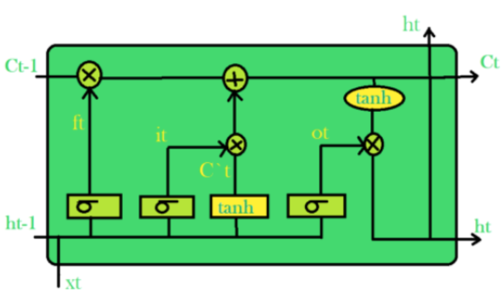
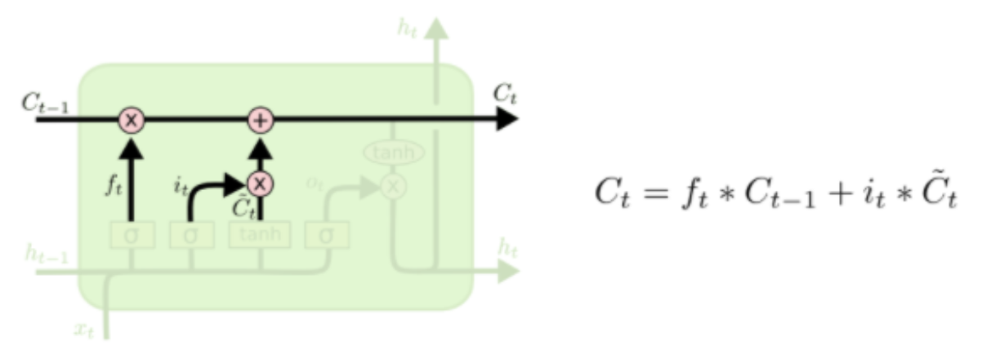
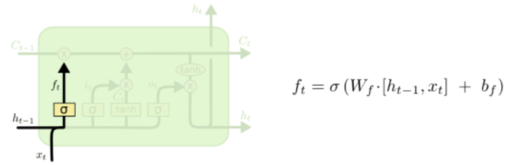
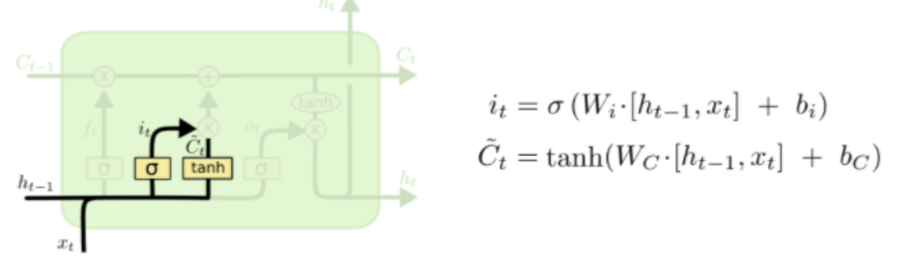
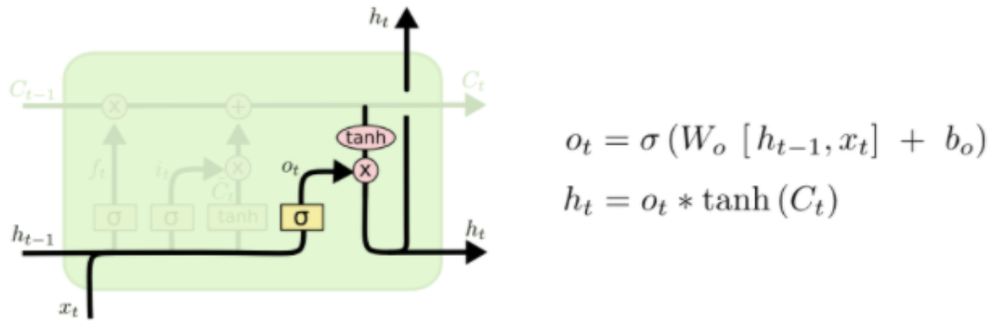
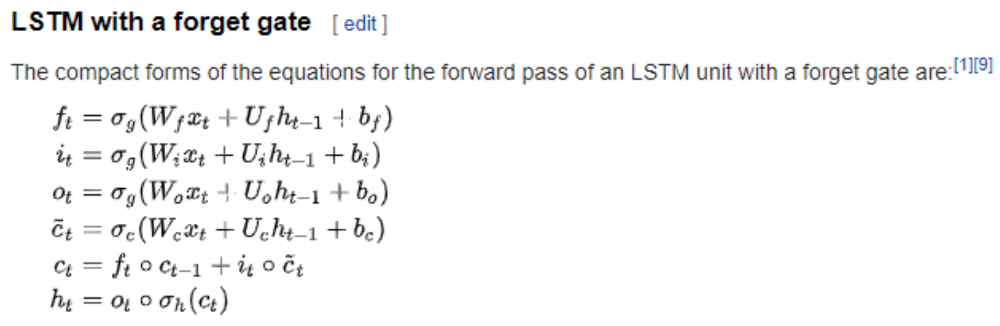
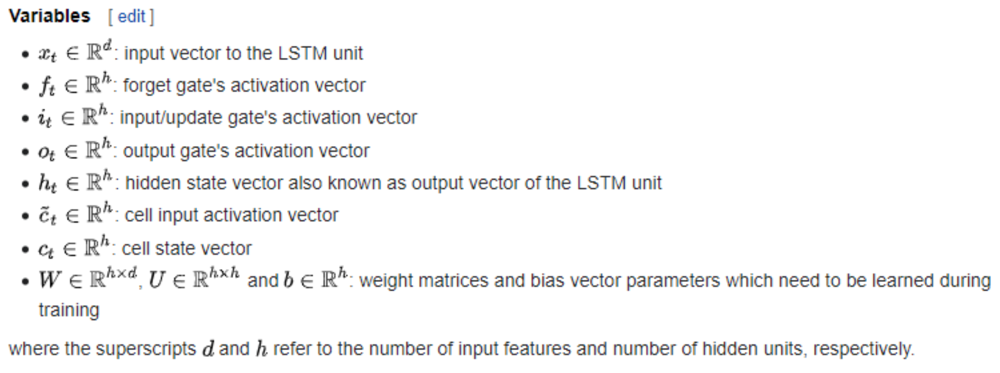

Research
Find here details about LSTM Models.
“… LSTM holds promise for any sequential processing task in which we suspect that a hierarchical
decomposition may exist, but do not know in advance what this decomposition is.”
— Felix A. Gers, et al., Learning to Forget: Continual Prediction with LSTM, 2000
LSTM (Long short term Memory) is a type of Recurrent Neural Network in Deep Learning that has been specifically developed for the use of handling sequence prediction problems. For example:
- Weather Forecasting
- Stock Market Prediction
- Product Recommendation
- Text/Image/Handwriting Generation
- Text Translation
“Since LSTMs are effective at capturing long-term temporal dependencies without suffering from
the optimization hurdles that plague simple recurrent networks (SRNs), they have been used to
advance the state of the art for many difficult problems. This includes handwriting recognition
and generation, language modeling and translation, acoustic modeling of speech, speech
synthesis, protein secondary structure prediction, analysis of audio, and video data among
others.”
— Klaus Greff, et al., LSTM: A Search Space Odyssey, 2015
Like other Neural Networks, they contain neurons to perform computation, however for LSTM, they are often referred to as memory cells or simply cells. These cells contain weights and gates; the gates being the distinguishing feature of LSTM models. There are 3 gates inside of every cell. The input gate, the forget gate, and the output gate.
“The Long Short Term Memory architecture was motivated by an analysis of error flow in existing RNNs which found that long time lags were inaccessible to existing architectures, because backpropagated error either blows up or decays exponentially. An LSTM layer consists of a set of recurrently connected blocks, known as memory blocks. These blocks can be thought of as a differentiable version of the memory chips in a digital computer. Each one contains one or more recurrently connected memory cells and three multiplicative units - the input, output and forget gates - that provide continuous analogues of write, read and reset operations for the cells. ... The net can only interact with the cells via the gates.” Framewise Phoneme Classification with Bidirectional LSTM and Other Neural Network Architectures, 2005.
The Cell State
The cell state is sort of like a conveyor belt that moves the data along through the cell. It gets altered and updated according to the results from the forget and input gates.
The Forget State
This gate removes unneeded information before merging with the cell state. It takes in 2 inputs, new information (x_t) and the previous cells output (h_t-1). Similar to the input gate, it runs these inputs through a sigmoid gate to filter out unneeded data, and then merges it with the cell state via multiplication.
The Input State
This gate adds information to the cell state. It employs a sigmoid gate to determine what amount of information needs to be kept. It uses the tanh function to create a vector for the information to be added. It then multiplies the results from the sigmoid gate and tanh functions and adds the useful information to the cell state using addition.
The Output State
Selects useful information based on cell state, the previous cell output, and new data. It does this by taking the cell state, after the input gate and forget gate merge, and runs it through a tanh function to create a vector. It then takes the new data and previous cell output and runs them through a sigmoid function to find what values need to be outputted. The results of those 2 operations are then multiplied and returned as this cells output.
Formulas
 